A ferramenta de reclassificação de feições permite que feições de uma camada sejam reclassificadas (movidas) para uma camada EDGV de acordo com atributos já pré-estabelecidos pelo usuário. Esta ferramenta é muito útil durante a etapa de reambulação, onde o operador pode, de maneira automatizada, reclassificar feições desconhecidas com apenas um clique de um botão. Para acessar a ferramenta o usuário deve clicar no botão Ferramenta de Reclassificação de Feições diretamente na barra de ferramentas pelo menu Ferrametas DSG-Ferramentas de Produção-Ferramenta de Reclassificação de Feições . Também é possível acessar a ferramenta pelo ícone apresentado na figura abaixo.
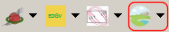
Clicando no ícone da figura, a janela Caixa de Ferramentas de Reclassificação aparecerá e o usuário poderá selecionar o banco que utilizará clicando em Conexão do Banco de Dados, onde ocorre a seleção do tipo banco do trabalho, se SpatiaLite ou PostGIS.
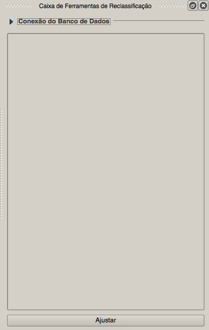
Abaixo pode-se ver um exemplo de conexão com um banco EDGV FTer.
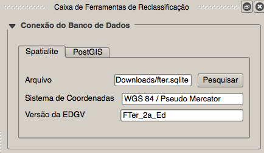
Selecionado o banco de dados, clica-se em Ajustar para ir para a janela de configuração da ferramenta, conforme é mostrado na figura abaixo.
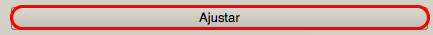
A janela de configuração da abaixo é onde o usuário define ou carrega uma configuração já realizada anteriormente.
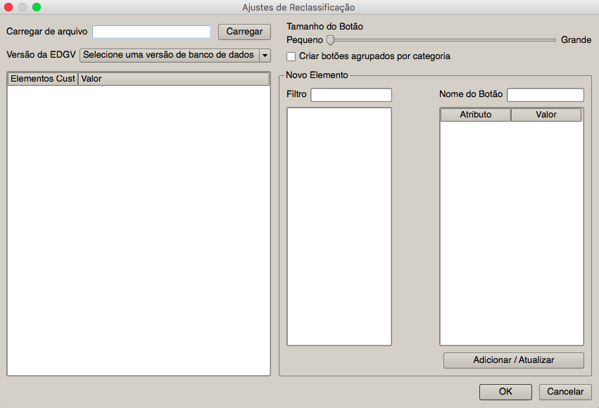
A janela de configuração é dividida em partes, quais sejam:
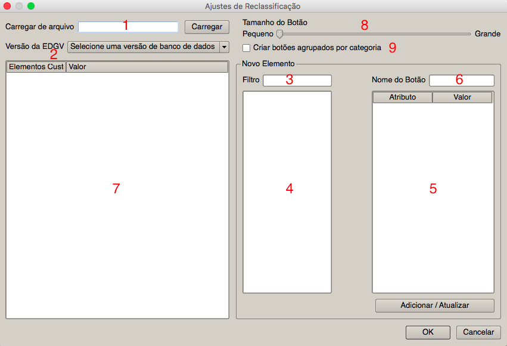
Para iniciar uma nova configuração o usuário deve inicialmente escolher uma versão da EDGV para trabalhar. Isso pode ser feito clicando-se em Versão da EDGV . No caso vamos usar a versão FTer da EDGV. Agora é possível selecionar as classes que se quer definir na configuração de reclassificação, para tanto, podemos usar o Filtro e buscar, por exemplo, a classe trecho rodoviário para que possamos criar botões para reclassificar rodovias federais (botão com nome BR) e rodovias estaduais (botão com nome RJ). Na figura abaixo vemos o caso da criação do botão BR. Após definir os valores dos atributos, basta ao usuário clicar no botão Adicionar/Atualizar logo abaixo dos atributos para chegar ao resultado da imagem abaixo.
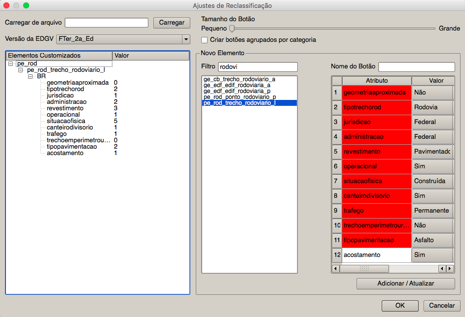
Seguindo em frente, podemos fazer o mesmo para rodovias estaduais para o Estado do Rio de Janeiro. Chegando ao resultado mostrado abaixo.
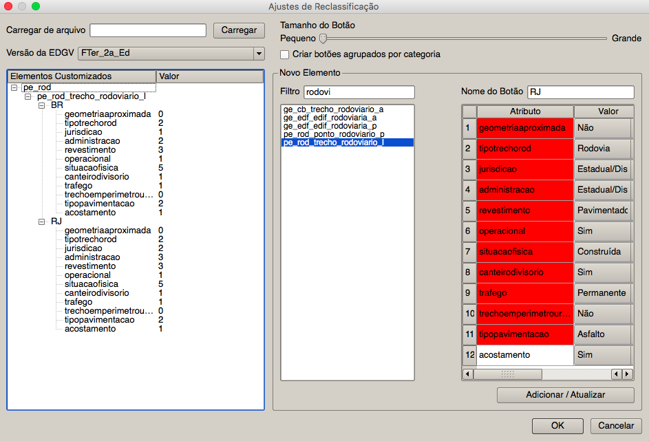
Finalizando a criação da configuração de reclassificação, resta ao usuário salvar um arquivo para que possa ser utilizado posteriormente. Clicando-se em OK no canto inferior direito da janela é possível salvar o arquivo de configuração feito.
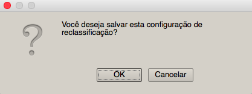
Escolha o nome do arquivo de configuração e o local onde deseja salvar e confirme.
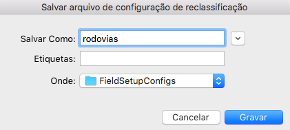
Espere a confirmação como se pode ver na figura abaixo.
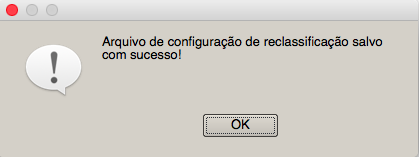
Agora é possível ver os botões de reclassificação que foram definidos prontos para serem usados na figura abaixo.
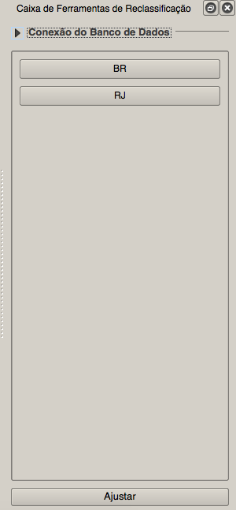
Vamos agora usar a configuração de reclassificação que criamos. Vamos supor que já tenhamos uma camada no QGIS de rodovias desconhecidas como se pode ver na figura abaixo.
Usando como base os dados do OpenStreetMap, foi possível descobrir que a BR-116 e a RJ-145 são as rodovias presentes na camada. Sendo assim, para reclassificar a BR-116, devemos inicialmente selecionar sua feição, como se pode ver na figura abaixo.
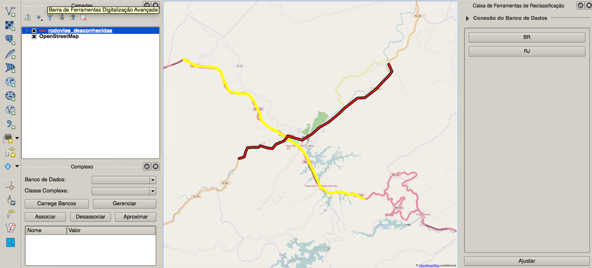
Ao se clicar no botão BR a classe correspondente da EDGV será automaticamente carregada no QGIS mostrando a feição já reclassificada como se pode ver na figura abaixo.
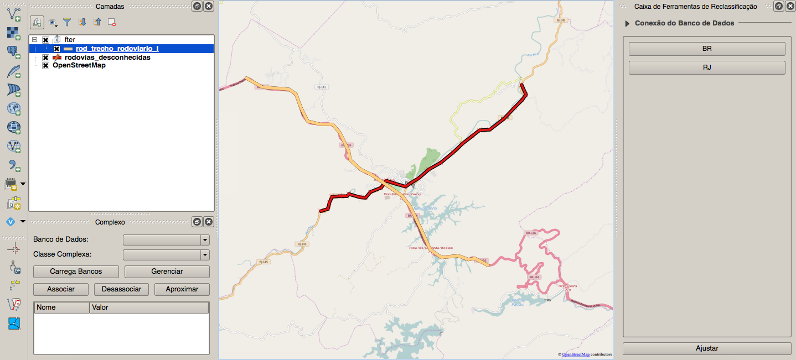
Repetindo o processo para a RJ-145 chega-se ao resultado visto na figura abaixo.
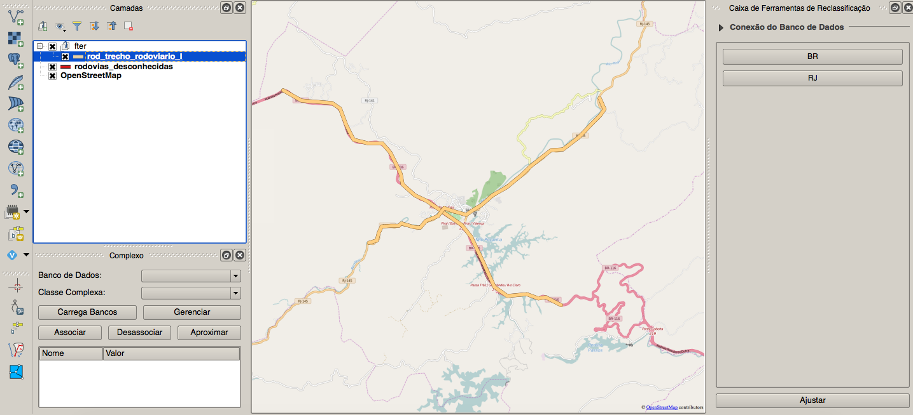
Finalizando, é possível ver a tabela de atributos das feições reclassificadas como se pode ver na figura abaixo.